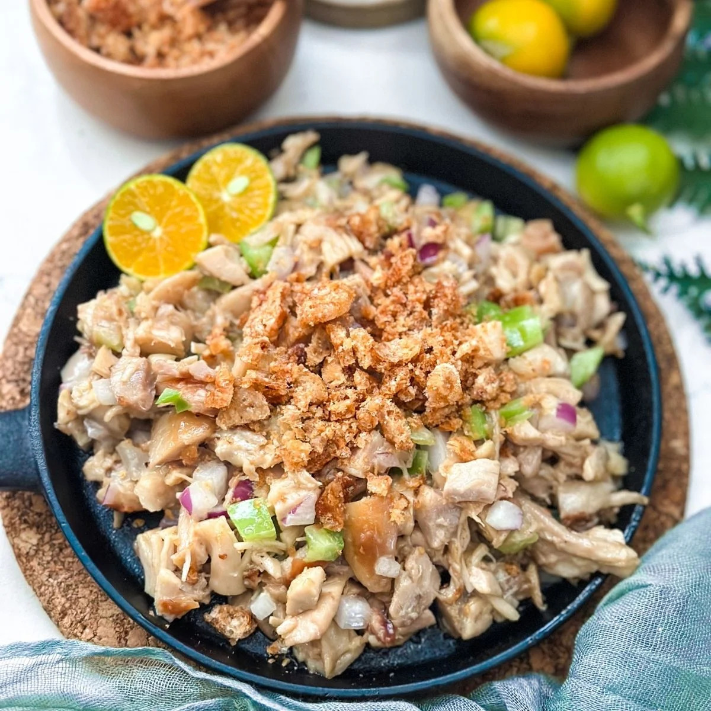
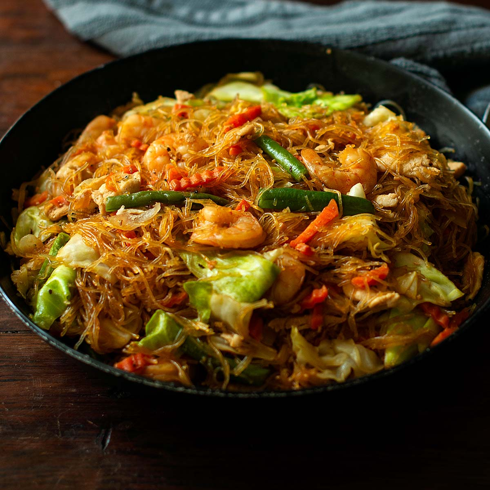
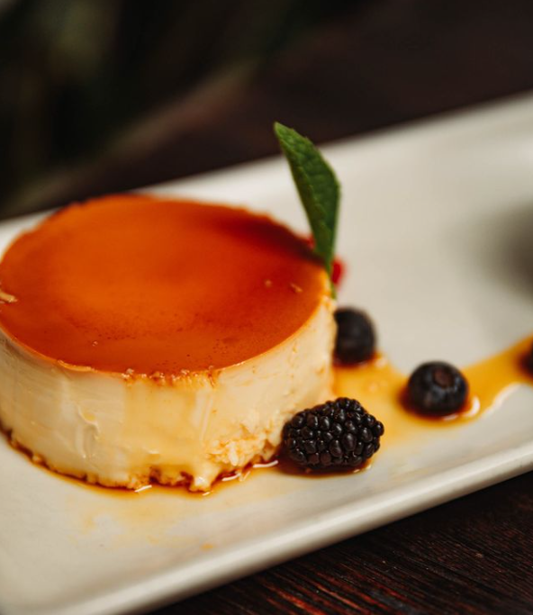

ADOBO
Try this savory Filipino dish made with pork or chicken simmered in soy sauce, vinegar, garlic, and spices.
See full recipe

SISIG
This popular Filipino dish made from sizzling chopped pork, seasoned with onions, chili, and citrus, served hot and crispy.
See full recipe
BICOL EXPRESS
A spicy, creamy stew from the Bicol region, made with pork, coconut milk, shrimp paste, and fiery chili peppers.
See full recipe

PANCIT
A delicious Filipino noodle dish made with chicken, pork, shrimp, and a savory sauce.
See full recipe

LECHE FLAN
A creamy caramel custard dessert that's a popular treat in the Philippines.
See full recipe
HALO-HALO
A creamy caramel custard dessert that's a popular treat in the Philippines.
See full recipe
KWEK-KWEK
A delicious Filipino noodle dish made with chicken, pork, shrimp, and a savory sauce.
See full recipe